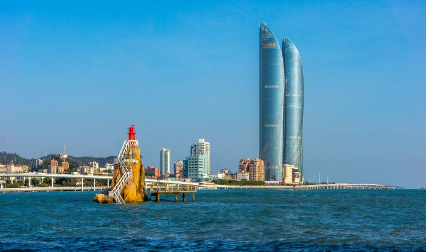
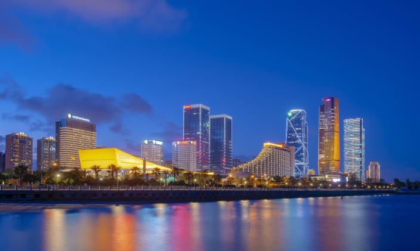
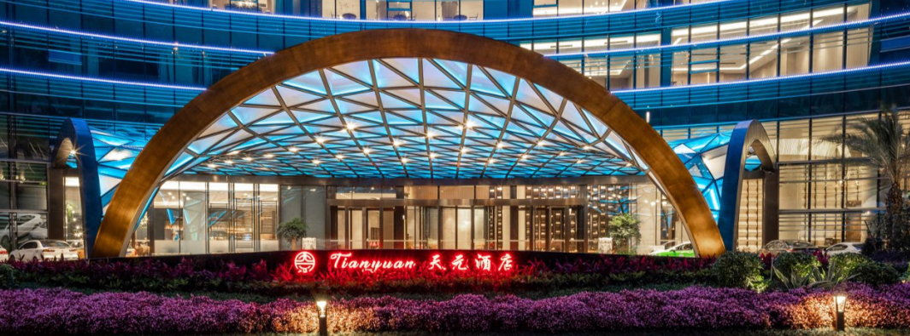
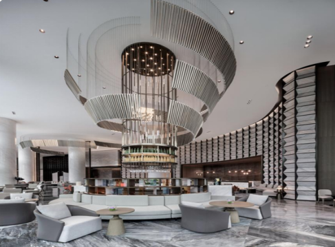
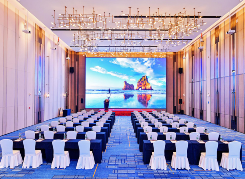
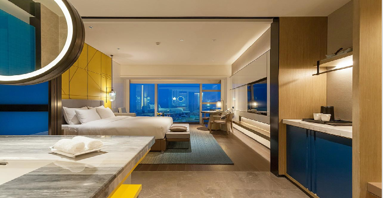
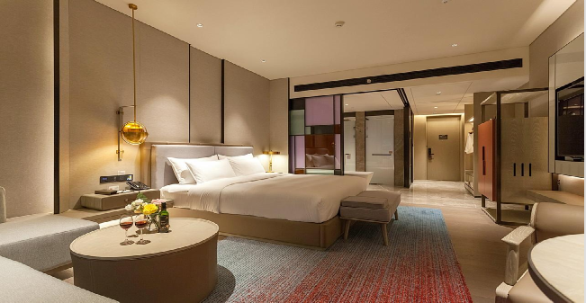
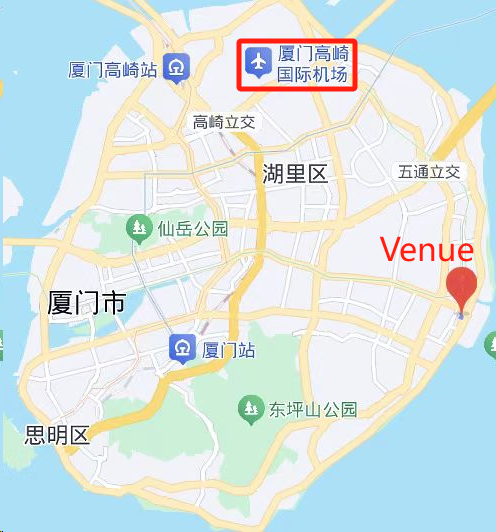
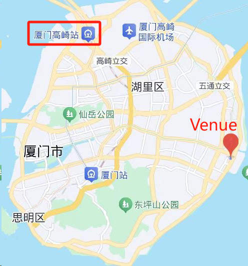
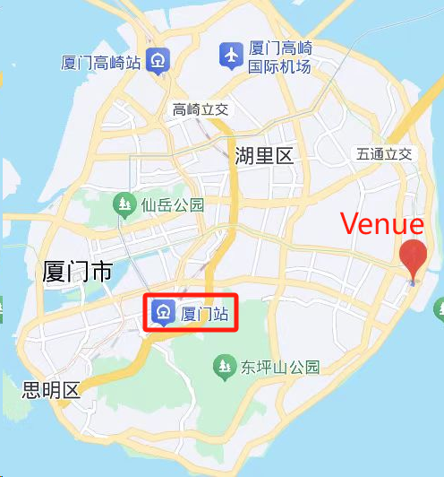

Venue
About Xiamen
Xiamen is a beautiful coastal city located in the southeast of China. It is famous for its pleasant climate, charming scenery, and rich culture.
The beaches in Xiamen are simply breathtaking. The golden sand, clear blue water, and gentle waves attract countless tourists every year. You can enjoy sunbathing, swimming, or just walking along the shore feeling the sea breeze and listening to the sound of the waves.
The city also has many historical and cultural attractions. The Gulangyu Island, for instance, is a must-visit place. It is full of colonial-style buildings and has a unique charm. The Nanputuo Temple is another popular destination, where you can experience the profound Buddhist culture. The local cuisine in Xiamen is also something to look forward to. The fresh seafood, various snacks, and unique flavors will definitely satisfy your taste buds.


Venue
Tianyuan Hotel Xiamen (No.1813, East Huandao Road, Siming District)
Tianyuan Hotel Xiamen (厦门天元酒店) is a five-star hotel located in the emerging financial and commercial center of Xiamen, close to the scenic coastline of the Huandao Road and surrounded by blue sea and blue sky.
It is within walking distance to the International Convention Center and Xiangshan Yacht Center, and within 20 minutes' drive to Guanyinshan Water Park, Xiamen University, Zengcuo Aun, Ferry Terminal and Zhongshan Road.
Hotel Website: https://en.tianyuanxiamen.cn/



Accomodation
Tianyuan Hotel Xiamen (厦门天元酒店) has more than 300 guest rooms and suites, equipped with complete facilities and elegant furniture. The rooms have a wide view, guests can enjoy the magnificent sea view and feel the delicate and warm city landscape of Xiamen.
● Conference Preferential Price
Business Single/Twin room (500 RMB, including one or two breakfasts)
Deluxe Single/Twin room (500 RMB, including one or two breakfasts)


● Room Booking
For Overseas Participants :
Please send an email to jack.feng@tianyuanhotel.com.cn before October 15, 2025.
Be sure to tell that you are the attendee of ' The International Conference on Machine Intelligence and Nature-inspireD Computing (MIND 2025)' , so that you can enjoy the preferential price.
For Domestic Participants :
Please click the link or scan the QR code to make a room reservation.
Transportation
● Xiamen Gaoqi International Airport: 14km, 22 mins for driving.
● Guidelines for subway or bus (1 hour)

1. Firstly walking 360 meters to Gaoqi T3 terminal bus stop, and take the airport line in the first pier direction to Luling Road stop in 10 minutes.
2. 2.Secondly walking 200 meters from Luling Road bus stop to Jiangtou Metro Station, then taking Metro Line 2 in the direction of Wuyuanwan for 5 stops to Software Park Phase II Station.
3. Finally walking 1.5 km to the hotel.
● Xiamen North Railway Station: 26km, 35 mins for driving.
● Guidelines for subway and bus (1 hour and 5 mins)

1. Firstly walking 150 meters to Xiamen North Metro Station, and taking Metro Line 1 in the direction of Zhenhai Road for 15 stations to Lücuo Station.
2. Secondly waking 150 meters for station transfer to take Metro Line 2 in the direction of Wuyuanwan for 6 stations to Software Park Phase II Station.
3. Finally walking 1.5 km to the hotel.
● Xiamen Railway Station: 9.5km, 21 mins for driving.
● Guidelines for subway and bus (50 mins)

1. Firstly walking 120 meters to Xiamen Railway Metro Station, and taking Metro Line 3 in the direction of Caicuo for 2 stops to the Sports Center Station.
2. Secondly waking 100 meters for station transfer to take Metro Line 2 in the direction of Wuyuanwan for 8 stations to Software Park Phase II Station.
3. Finally walking 1.5 km to the hotel.